-
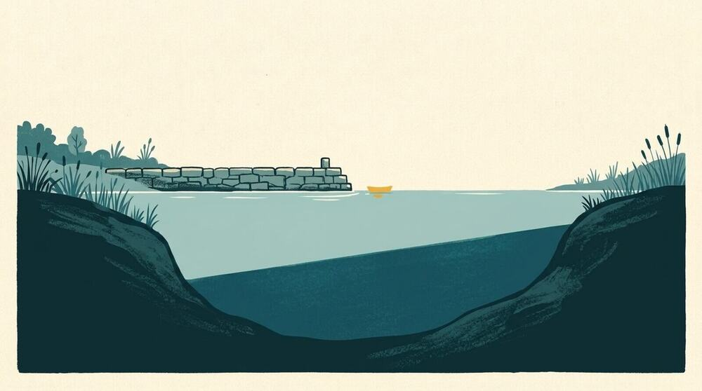
Plötzlicher Temperatursturz im Wasser: die internen Seiches des Genfersees
Im Sommer hat der See zwei Schichten, und der Wind kann die Grenze zwischen ihnen kippen. Was Wikipedia zu den internen Seiches des Genfersees sagt und was das am Ufer erklären kann.
Artikel lesen → -

Die Durchmischung des Sees: warum kalte Winter für den Genfersee zählen
Jedes Jahresende kann sich das Seewasser durchmischen. Was Durchmischung ist, warum es sehr kalte Winter braucht und was 2017 geschah, nach Wikipedia und CIPEL.
-

Sprungschicht und Schichtung: warum die Seeoberfläche wärmer ist
Bei warmem Wetter bildet ein See drei Schichten: eine warme an der Oberfläche, eine Übergangszone, eine kalte in der Tiefe. Was Epilimnion, Sprungschicht und Hypolimnion sind.
-

Der Genfersee erwärmt sich: +2 °C an der Oberfläche in 46 Jahren
Die mittlere Oberflächentemperatur des Genfersees stieg von 10,9 °C im Jahr 1970 auf 12,9 °C im Jahr 2016. Was das für den See ändert, nach Wikipedia.
-
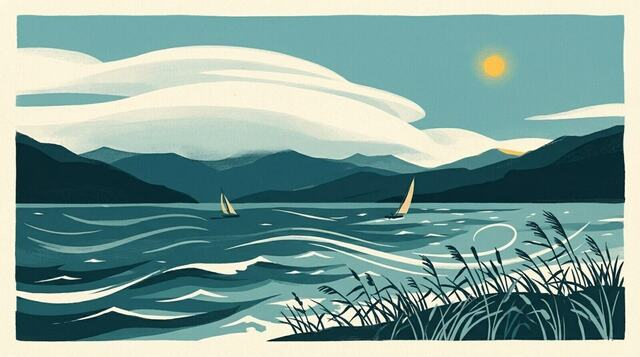
Der Föhn in der Schweiz: ein warmer, trockener Wind aus Süden
Woher der Föhn kommt, warum er trocken und warm ist, wie stark er die Luft erwärmt, und die Episode vom November 1982 in Zürich, nach Wikipedia.
-
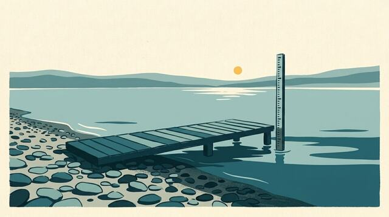
Der Pegel des Genfersees: wer ihn regelt, zwischen welchen Höhen
Seit 1884 wird der Pegel des Genfersees zwischen 371,7 und 372,3 Metern geregelt. Davor schwankte er zwischen Sommer und Winter um 1,54 m. Die Höhen der Vereinbarung von 1984, nach Wikipedia.
-
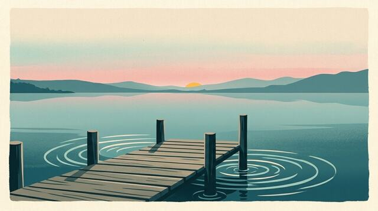
Die Seiches des Genfersees: wenn der See schaukelt
Eine Seiche ist eine stehende Welle im See: Der Pegel steigt auf der einen Seite, während er auf der anderen fällt. Periode, Höhe, wer sie erforscht hat, nach Wikipedia.
-
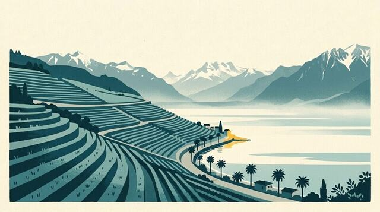
Das Mikroklima des Genfersees: wie der See den Winter mildert und den Sommer kühlt
Durch seine Wassermasse schafft der Genfersee um sich herum ein Mikroklima. Was Wikipedia zu seinen Wirkungen sagt, von Montreux bis zur Bise.
-
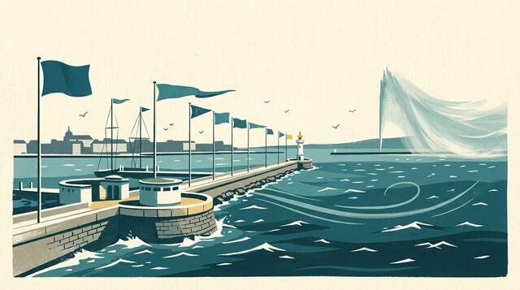
Die Winde des Genfersees: Bise, Vaudaire, Joran und Séchard
Vier Winde prägen den Genfersee: Bise, Vaudaire, Joran und Séchard. Woher sie wehen, wie stark, wann und was sie mit dem Wasser machen, nach Wikipedia.
-

Wassertemperatur der Schweizer Seen heute: die Rangliste vom Morgen
Die Rangliste vom Morgen der Seen, die Mein See verfolgt, nach dem Alplakes-Modell der Eawag, täglich aktualisiert, und wie man die Unterschiede liest.
-

Wirkung von Kaltbaden: was Studien sagen und was nicht
Schlaf, Lebensqualität, Stimmung, Erkältungen, Kreislauf: was eine Metaanalyse von 2025 und eine Übersichtsarbeit zu kaltem Wasser sagen, was eine Schweizer Krankenkasse schreibt und für wen es nicht geeignet ist.
-
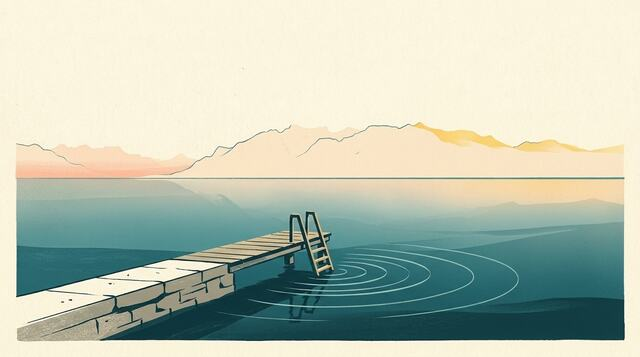
Atmen im kalten Wasser: den Atemreflex beim Einstieg beherrschen
Atemreflex, unkontrollierbare Hyperventilation, Panik: was die Outdoor Swimming Society, Helsana und eine Übersichtsarbeit beschreiben und wie man einsteigt, damit sich die Atmung beruhigt.
-

4-Wochen-Programm für den Einstieg ins Winterbaden, Schritt für Schritt
Vier Wochen von wenigen Sekunden zu einigen Minuten im kalten Wasser, mit der Regel der Schweizerischen Lebensrettungs-Gesellschaft als Obergrenze. Ein Vorschlag von Mein See, kein medizinisches Protokoll.
-

Neopren fürs Winterbaden: Anzug, Handschuhe, Schuhe und was sie bewirken
Was ein Neoprenanzug im kalten Wasser leistet, welche Dicke bei welcher Temperatur laut RLSS, warum er weder Kälteschock noch Unterkühlung verhindert und welche Handschuhe und Socken Helsana erwähnt.
-
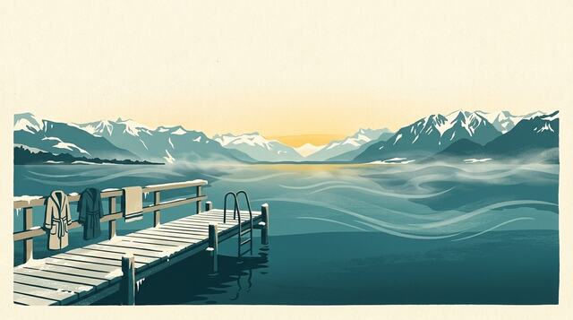
Winterbaden in der Gruppe in der Schweiz: Kurse, Workshops und Treffpunkte für den Einstieg
Eisbadi Arosa, Kurse in Davos und St. Moritz, Seebad Utoquai in Zürich, Pâquis in Genf: wo man Winterbaden mit anderen lernen kann und warum man besser nicht allein geht.
-

Coupe de Noël 2026 in Genf: Daten, Strecke, Anmeldung und Tipps
Die 88. Coupe de Noël wird am 19. und 20. Dezember 2026 in der Genfer Rade geschwommen: 100 m entlang des Jardin Anglais. Programm, Kategorien, Preis, Anreise, Garderoben und Vorbereitung, nach der offiziellen Website.
-

Wassertemperatur Brienzersee heute: woher der Wert kommt
Die Wassertemperatur im Brienzersee in 70 cm Tiefe, für die 4 erfassten Badeplätze, alle drei Stunden aktualisiert. Woher der Wert kommt und was er nicht aussagt.
-

Wo baden am Baldeggersee: alle 2 Badeplätze, mit dem Wasser vom Morgen
Die 2 erfassten Badeplätze am Baldeggersee: vollständige Liste mit der Wassertemperatur vom Morgen, wo man isst und trinkt, wo man ein Boot oder Paddle mietet.
-
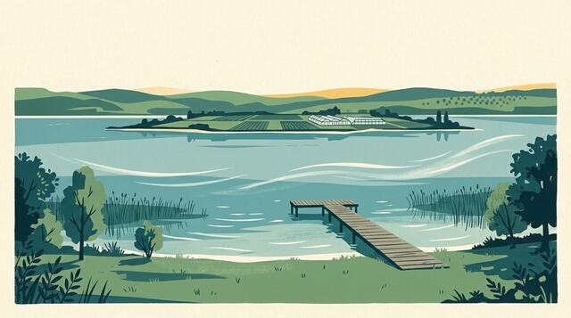
Wo baden am Bodensee – Untersee: alle 4 Badeplätze, mit dem Wasser vom Morgen
Die 4 erfassten Badeplätze am Bodensee – Untersee: vollständige Liste mit der Wassertemperatur vom Morgen, wo man isst und trinkt, wo man ein Boot oder Paddle mietet.
-

Wassertemperatur Murtensee heute, Badeplatz für Badeplatz
Die Wassertemperatur im Murtensee in 70 cm Tiefe, vor jedem der 4 erfassten Badeplätze, alle drei Stunden aktualisiert. Woher der Wert kommt und was er nicht aussagt.
-

Winterbaden im Neuenburger-, Bieler- und Murtensee: Badeplätze und Saunas
Winterbaden im Neuenburgersee, Bielersee und Murtensee: die Zeitregel der SLRG, das Wasser von heute Badeplatz für Badeplatz, die erfassten Badeplätze und die Saunas am Wasser.
-

Wo baden am Sempachersee: alle 4 Badeplätze, mit dem Wasser vom Morgen
Die 4 erfassten Badeplätze am Sempachersee: vollständige Liste mit der Wassertemperatur vom Morgen, wo man isst und trinkt, wo man ein Boot oder Paddle mietet.
-
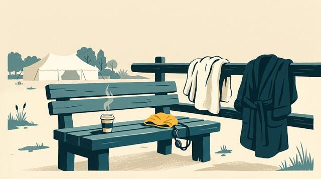
Afterdrop: warum man nach einem Winterbad noch mehr friert und wie man sich aufwärmt
Warum der Körper nach dem Ausstieg noch etwa zehn Minuten weiter auskühlt, wie man sich umzieht, was man trinkt und was man besser vermeidet, etwa die heisse Dusche.
-

Wassertemperatur Vierwaldstättersee heute, Badeplatz für Badeplatz
Die Wassertemperatur im Vierwaldstättersee in 70 cm Tiefe, vor jedem der 18 erfassten Badeplätze, alle drei Stunden aktualisiert. Woher der Wert kommt und was er nicht aussagt.
-

Wo baden am Lac des Brenets: der Badeplatz, mit dem Wasser vom Morgen
Der erfasste Badeplatz am Lac des Brenets: vollständige Liste mit der Wassertemperatur vom Morgen, wo man isst und trinkt, wo man ein Boot oder Paddle mietet.
-
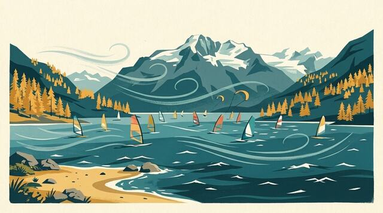
Wo baden am Silvaplanersee: der Badeplatz, mit dem Wasser vom Morgen
Der erfasste Badeplatz am Silvaplanersee: vollständige Liste mit der Wassertemperatur vom Morgen, wo man isst und trinkt, wo man ein Boot oder Paddle mietet.
-
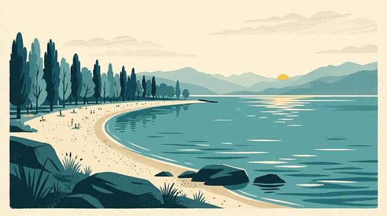
Badewasserqualität am Genfersee: wie man weiss, ob man baden kann
Wer das Wasser der Badeplätze am Genfersee untersucht, wie man die Einstufungen liest und warum eine Analyse vom August nichts über das Wasser im November sagt.
-
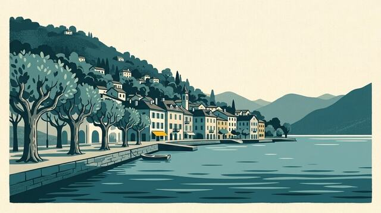
Wassertemperatur Lago Maggiore heute: woher der Wert kommt
Die Wassertemperatur im Lago Maggiore in 70 cm Tiefe, für die 7 erfassten Badeplätze, alle drei Stunden aktualisiert. Woher der Wert kommt und was er nicht aussagt.
-
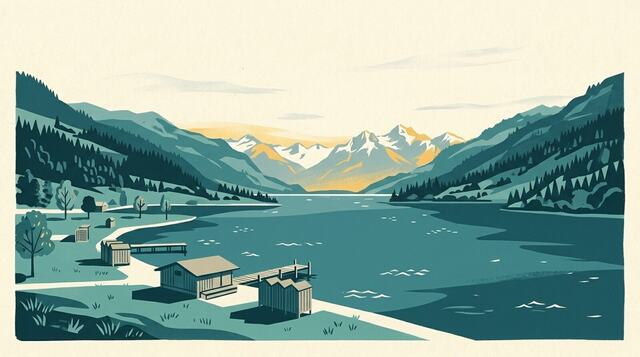
Wo baden am Sarnersee: alle 2 Badeplätze, mit dem Wasser vom Morgen
Die 2 erfassten Badeplätze am Sarnersee: vollständige Liste mit der Wassertemperatur vom Morgen, wo man isst und trinkt, wo man ein Boot oder Paddle mietet.
-

Wakeboard, Wakesurf und Wasserski auf dem Genfersee: die Schulen und Clubs
Von Pregny bis Thonon: die Schulen und Clubs, die das Boot für Wakeboard, Wakesurf und Wasserski rausnehmen, und warum es einen glatten See braucht.
-
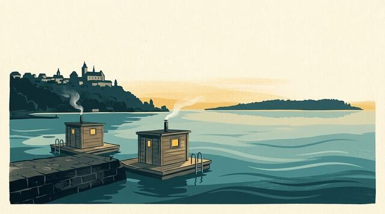
Saunaboote und Saunaflösse in der Schweiz: 6 Adressen auf vier Seen
Saunaboote und Saunaflösse auf Genfersee, Bielersee, Zürichsee und Vierwaldstättersee: 6 Adressen mit Abfahrtsort und Buchungsseite.
-

Wo baden am Greifensee: alle 3 Badeplätze, mit dem Wasser vom Morgen
Die 3 erfassten Badeplätze am Greifensee: vollständige Liste mit der Wassertemperatur vom Morgen, wo man isst und trinkt, wo man ein Boot oder Paddle mietet.
-

Badeplätze am Genfersee auf der französischen Seite: von Évian bis Chens-sur-Léman
Die Badeplätze am französischen Ufer des Genfersees, von Meillerie bis Chens-sur-Léman, mit der Wassertemperatur von heute, den Restaurants und den Wake-Schulen in der Nähe.
-

Wassertemperatur Lac de Joux heute, Badeplatz für Badeplatz
Die Wassertemperatur im Lac de Joux in 70 cm Tiefe, vor jedem der 2 erfassten Badeplätze, alle drei Stunden aktualisiert. Woher der Wert kommt und was er nicht aussagt.
-
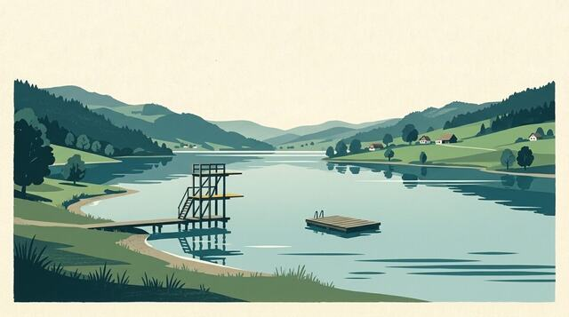
Wo baden am Ägerisee: der Badeplatz, mit dem Wasser vom Morgen
Der erfasste Badeplatz am Ägerisee: vollständige Liste mit der Wassertemperatur vom Morgen, wo man isst und trinkt, wo man ein Boot oder Paddle mietet.
-
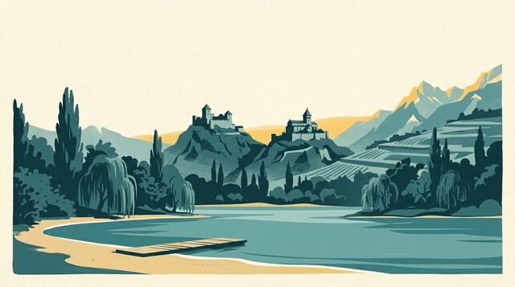
Wo baden im Domaine des Îles (Sitten): der Badeplatz, mit dem Wasser vom Morgen
Der erfasste Badeplatz im Domaine des Îles (Sitten): vollständige Liste mit der Wassertemperatur vom Morgen, wo man isst und trinkt, wo man ein Boot oder Paddle mietet.
-
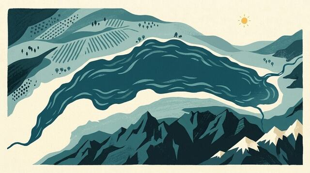
Temperatur des Genfersees: woher die Zahlen kommen und warum sie schwanken
Wie das Wasser des Genfersees in 70 cm Tiefe vor jedem Badeplatz berechnet wird, warum es in zwei Tagen mehrere Grad verlieren kann und wo man es live sieht.
-
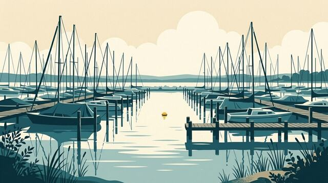
Wassertemperatur Bodensee heute: woher der Wert kommt
Die Wassertemperatur im Bodensee in 70 cm Tiefe, für die 12 erfassten Badeplätze, alle drei Stunden aktualisiert. Woher der Wert kommt und was er nicht aussagt.
-
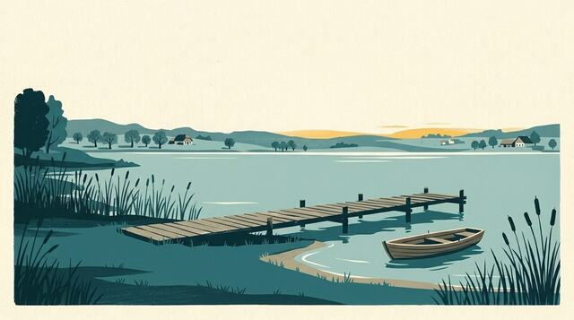
Wo baden am Hallwilersee: alle 4 Badeplätze, mit dem Wasser vom Morgen
Die 4 erfassten Badeplätze am Hallwilersee: vollständige Liste mit der Wassertemperatur vom Morgen, wo man isst und trinkt, wo man ein Boot oder Paddle mietet.
-

Ausrüstung fürs Winterbaden: die vollständige Liste vor dem Gang an den Genfersee
Mütze, Neopren-Schuhe und -Handschuhe, Schwimmboje, Unterlage zum Umziehen, Cape und Thermosflasche: alles, was man für ein Winterbad im Genfersee mitnehmen sollte, und warum.
-

Sauna am Zürichsee: 5 Adressen von der Stadt bis Rapperswil
Die 5 Saunas am Zürichsee, die Mein See erfasst: Sauna am See im Seebad Enge, Seesauna Stäfa und Saunaboote. Ort, Saison und Link zur Website.
-
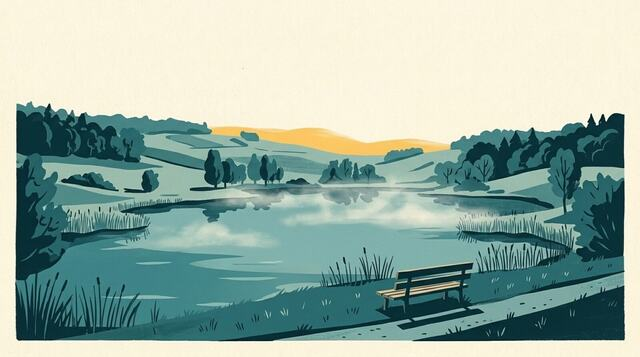
Wo baden am Lac de Bret: der Badeplatz, mit dem Wasser vom Morgen
Der erfasste Badeplatz am Lac de Bret: vollständige Liste mit der Wassertemperatur vom Morgen, wo man isst und trinkt, wo man ein Boot oder Paddle mietet.
-

Wo baden am Brienzersee: alle 4 Badeplätze, mit dem Wasser vom Morgen
Die 4 erfassten Badeplätze am Brienzersee: vollständige Liste mit der Wassertemperatur vom Morgen, wo man isst und trinkt, wo man ein Boot oder Paddle mietet.
-

Wassertemperatur Greyerzersee heute: woher der Wert kommt
Die Wassertemperatur im Greyerzersee in 70 cm Tiefe, für die 5 erfassten Badeplätze, alle drei Stunden aktualisiert. Woher der Wert kommt und was er nicht aussagt.
-
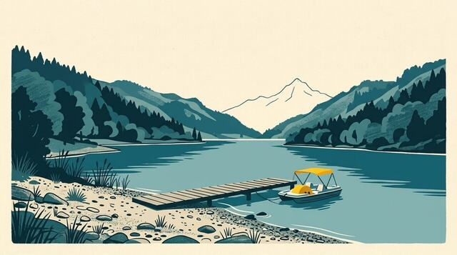
Wo baden am Greyerzersee: alle 5 Badeplätze, mit dem Wasser vom Morgen
Die 5 erfassten Badeplätze am Greyerzersee: vollständige Liste mit der Wassertemperatur vom Morgen, wo man isst und trinkt, wo man ein Boot oder Paddle mietet.
-

Wo baden am Zugersee: alle 15 Badeplätze, mit dem Wasser vom Morgen
Die 15 erfassten Badeplätze am Zugersee: vollständige Liste mit der Wassertemperatur vom Morgen, wo man isst und trinkt, wo man ein Boot oder Paddle mietet.
-

Kitesurfen, Windsurfen und Wingfoilen auf dem Genfersee: der richtige Wind und die richtigen Spots
Welche Windstärke fürs Kitesurfen, Windsurfen und Foilen auf dem Genfersee, warum die Bise die besten Downwinds macht und wo man mieten oder lernen kann.
-

Wassertemperatur Thunersee heute: woher der Wert kommt
Die Wassertemperatur im Thunersee in 70 cm Tiefe, für die 8 erfassten Badeplätze, alle drei Stunden aktualisiert. Woher der Wert kommt und was er nicht aussagt.
-

Wo baden am Vierwaldstättersee: alle 18 Badeplätze, mit dem Wasser vom Morgen
Die 18 erfassten Badeplätze am Vierwaldstättersee: vollständige Liste mit der Wassertemperatur vom Morgen, wo man isst und trinkt, wo man ein Boot oder Paddle mietet.
-
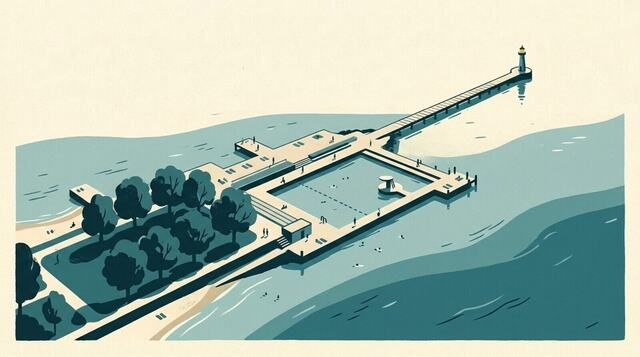
Wo in Genf baden: die Badeplätze des Kantons, einer nach dem anderen
Von den Bains des Pâquis bis Hermance: die Genfer Badeplätze am Genfersee mit ihren Buvetten und der Wassertemperatur von heute für jeden.
-

Winterbaden in Zürich: Badeplätze am See, Wasser von heute und Saunas
Winterbaden im Zürichsee und Greifensee: die Zeitregel der SLRG, das Wasser von heute Badeplatz für Badeplatz, die erfassten Badeplätze und die Saunas am See.
-
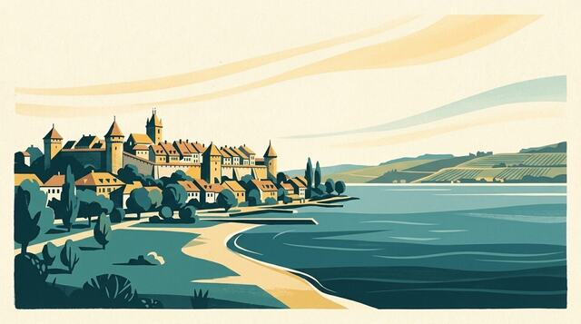
Wo baden am Murtensee: alle 4 Badeplätze, mit dem Wasser vom Morgen
Die 4 erfassten Badeplätze am Murtensee: vollständige Liste mit der Wassertemperatur vom Morgen, wo man isst und trinkt, wo man ein Boot oder Paddle mietet.
-

Strände am Lago Maggiore: Zugang, Essen und Trinken, Boots- und Paddle-Miete
Die 7 erfassten Badeplätze am Lago Maggiore: wie man hinkommt, wo man isst und trinkt, wo man ein Boot oder Paddle mietet. Die Wassertemperatur hat einen eigenen Artikel.
-

Paddeln auf dem Genfersee: wann der See ruhig genug ist und wo man mieten kann
Ab welchem Wind das Paddeln auf dem Genfersee schwierig wird, wie man Böen liest und die Paddle-Verleiher von Genf bis Saint-Gingolph.
-

Wassertemperatur Bielersee heute, Badeplatz für Badeplatz
Die Wassertemperatur im Bielersee in 70 cm Tiefe, vor jedem der 7 erfassten Badeplätze, alle drei Stunden aktualisiert. Woher der Wert kommt und was er nicht aussagt.
-

Wo baden am Bodensee: alle 12 Badeplätze, mit dem Wasser vom Morgen
Die 12 erfassten Badeplätze am Bodensee: vollständige Liste mit der Wassertemperatur vom Morgen, wo man isst und trinkt, wo man ein Boot oder Paddle mietet.
-

Winterbaden im Genfersee: gut starten in Genf und Lausanne
Wie lange im Wasser bleiben, wie hineingehen, wo baden und sich aufwärmen in Genf und Lausanne: der Leitfaden zum Winterbaden im Genfersee, mit dem Tageswasser Badeplatz für Badeplatz.
-

Wassertemperatur Luganersee heute, Badeplatz für Badeplatz
Die Wassertemperatur im Luganersee in 70 cm Tiefe, vor jedem der 14 erfassten Badeplätze, alle drei Stunden aktualisiert. Woher der Wert kommt und was er nicht aussagt.
-

Strände am Lac de Joux: Zugang, Essen und Trinken, Boots- und Paddle-Miete
Die 2 erfassten Badeplätze am Lac de Joux: wie man hinkommt, wo man isst und trinkt, wo man ein Boot oder Paddle mietet. Die Wassertemperatur hat einen eigenen Artikel.
-

Die Bise auf dem Genfersee: was sie fürs Baden, Paddeln und Kiten ändert
Woher die Bise kommt, wie man sie erkennt und ab wann sie das Baden und Paddeln stört, während Kitesurfer, Windsurfer und Foiler auf sie warten.
-
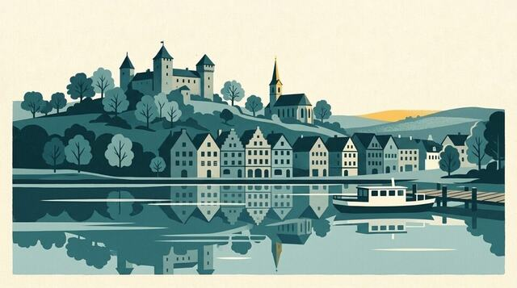
Wassertemperatur Zürichsee heute, Badeplatz für Badeplatz
Die Wassertemperatur im Zürichsee in 70 cm Tiefe, vor jedem der 20 erfassten Badeplätze, alle drei Stunden aktualisiert. Woher der Wert kommt und was er nicht aussagt.
-
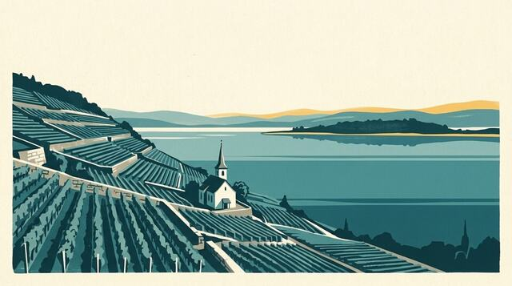
Wo baden am Bielersee: alle 7 Badeplätze, mit dem Wasser vom Morgen
Die 7 erfassten Badeplätze am Bielersee: vollständige Liste mit der Wassertemperatur vom Morgen, wo man isst und trinkt, wo man ein Boot oder Paddle mietet.
-

Wo baden am Thunersee: alle 8 Badeplätze, mit dem Wasser vom Morgen
Die 8 erfassten Badeplätze am Thunersee: vollständige Liste mit der Wassertemperatur vom Morgen, wo man isst und trinkt, wo man ein Boot oder Paddle mietet.
-

Buvetten und Restaurants am Genfersee: unsere Adressen mit den Füssen im Wasser
Die Terrassen am Wasser in Genf, an der Côte, in Lausanne, an der Riviera und am französischen Ufer, mit ihren Öffnungssaisons.
-
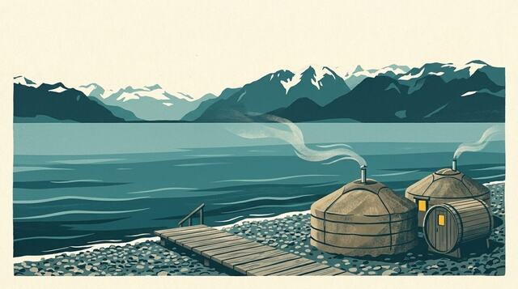
Saunas am Genfersee: alle 11 Adressen von Genf bis Vevey
Die 11 Saunas am Genfersee, die Mein See erfasst: Jurten, Fasssaunas, ein Saunaboot, historische Bäder. Saison, Ort und Link zur Website.
-

Wo baden am Luganersee: alle 14 Badeplätze, mit dem Wasser vom Morgen
Die 14 erfassten Badeplätze am Luganersee: vollständige Liste mit der Wassertemperatur vom Morgen, wo man isst und trinkt, wo man ein Boot oder Paddle mietet.
-

Kälteschock: die ersten 90 Sekunden im kalten Wasser des Genfersees
Was der Körper beim Einstieg in 10 °C kaltes Wasser tut, warum man nicht springen sollte, wie man in der ersten Minute atmet und warum man vor dem Start zum Arzt geht.
-
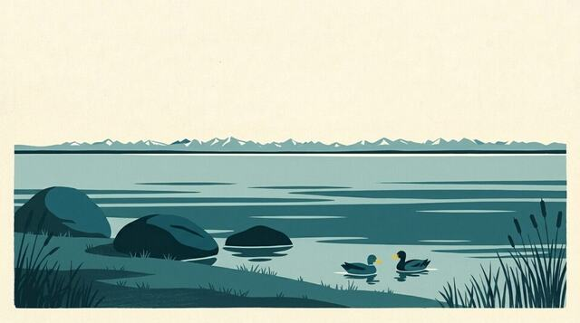
Wassertemperatur Neuenburgersee heute, Badeplatz für Badeplatz
Die Wassertemperatur im Neuenburgersee in 70 cm Tiefe, vor jedem der 15 erfassten Badeplätze, alle drei Stunden aktualisiert. Woher der Wert kommt und was er nicht aussagt.
-

Wo baden am Neuenburgersee: alle 15 Badeplätze, mit dem Wasser vom Morgen
Die 15 erfassten Badeplätze am Neuenburgersee: vollständige Liste mit der Wassertemperatur vom Morgen, wo man isst und trinkt, wo man ein Boot oder Paddle mietet.
-
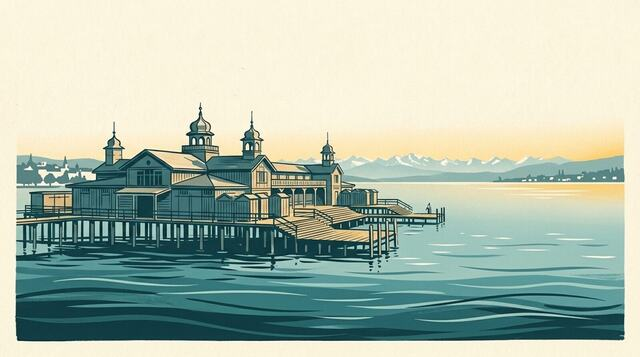
Wo baden am Zürichsee: alle 20 Badeplätze, mit dem Wasser vom Morgen
Die 20 erfassten Badeplätze am Zürichsee: vollständige Liste mit der Wassertemperatur vom Morgen, wo man isst und trinkt, wo man ein Boot oder Paddle mietet.